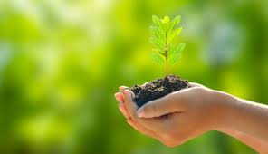

Introdução
A transição do campo para a cidade pode proporcionar novas oportunidades e melhorias sociais significativas. Vamos explorar como essa mudança pode ser benéfica.
Oportunidades de Emprego
Setores em Crescimento
As cidades oferecem uma ampla gama de setores em crescimento, como tecnologia e serviços, resultando em novas oportunidades de emprego.
Desenvolvimento de Carreira
A competição e inovação nas cidades incentivam o desenvolvimento profissional e a criação de novas possibilidades de carreira.
Melhorias na Educação
Acesso a Instituições Educacionais
Cidades oferecem uma variedade de instituições educacionais e programas de formação, aumentando o acesso à educação de qualidade.
Oportunidades de Aprendizado
Há uma ampla gama de cursos e treinamentos disponíveis, promovendo o desenvolvimento pessoal e profissional.
Infraestrutura e Serviços
Serviços de Saúde
O acesso a hospitais e clínicas especializadas nas cidades garante uma melhor qualidade nos serviços de saúde.
Transporte e Mobilidade
O transporte público eficiente e as opções de mobilidade facilitam a locomoção e o acesso a diferentes áreas da cidade.
Agronegócio
Inovação Tecnológica
O agronegócio está adotando tecnologias avançadas, como sensores e drones, para aumentar a eficiência e a produtividade das operações agrícolas.
.jpeg)
Oportunidades de Mercado
O crescimento das cidades cria novas oportunidades de mercado para produtos agrícolas, como alimentos frescos e orgânicos.
.jpeg)
Sustentabilidade
Práticas agrícolas sustentáveis estão se tornando mais comuns, promovendo o uso responsável dos recursos e a preservação ambiental.
Desenvolvimento Rural
A modernização do agronegócio contribui para o desenvolvimento das áreas rurais, melhorando a qualidade de vida e a infraestrutura local.
Integração Social
Diversidade Cultural
A vida urbana promove a interação com uma diversidade cultural rica, enriquecendo a experiência social.
Comunidades de Apoio
Existem diversas redes de apoio que ajudam na adaptação e oferecem suporte social, facilitando a integração.